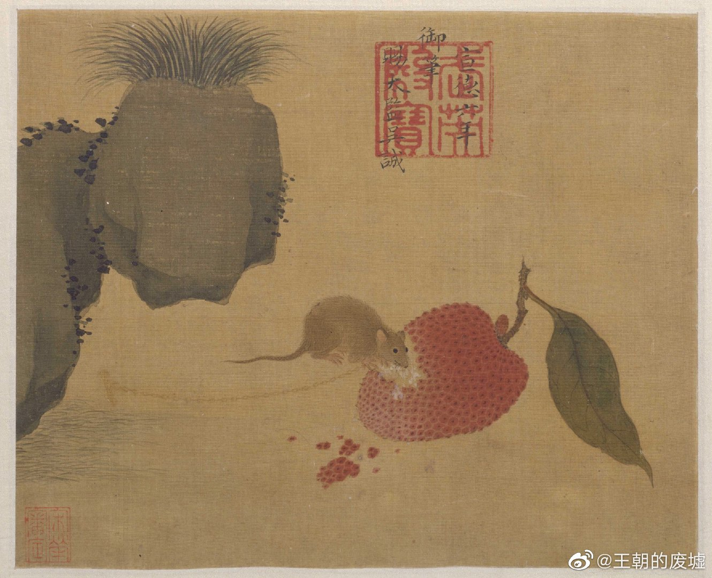
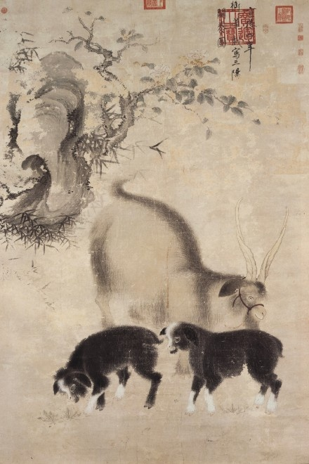

写给朱瞻基的信：
好久不见这本《诗意记》，这汇聚了各种清流影视正能量的札记。偶回味之，心下甚喜欲溢。
大明风华，始于微博一条“太子爷下线”的热搜与亚文哥访谈中提及的“皇族”温情，无宫斗“渲染”的评价。一入大明朝，三四日像着了魔似的探寻着新晋男神朱亚文的心路历程和决绝瞬间。从开始清衣素装略带狡黠的少年太孙，到后来浴血拼杀奋不顾身的先锋将军，再到幡然醒悟郑重继位的威严君主，一路上的风霜雨雪漫天狂沙是必经坎坷，亦是时代的无奈，也是生命本色。
与以往善恶分明歌功高位的古装剧不同，大明告诉你要是全然以诚信善良为本作人，你根本活不到明天。再者，身居高位的人，做的一切决定错了就是错了，得承认是与非。错的事，以波及结果为导向，再如何也无法被正位为，有权有势即有苦衷，既是正义。相反于善恶分明的主题，另一极端是人性本阴暗，所以善意无用且必须化为纯粹的算计才能利益最大化。这就强调了善是单纯是无法带来切实效果的，但麻木–[恶]，确是理性的且是符合社会竞争的潜规则的。这两种塑造完全是两极的，分别代表感知力与感知力的丧失。然而大明风华脱俗出众的一点是它通过塑造朱瞻基，这个从小生活在刀口下阴谋重重下的“变色龙”，倡导者一种以善良为底色，以关怀为初心，并用理智与算计首先保命与地位，其次达到善良与关怀众生的最终目标。从始至终，目标与信念一直树立没有崩塌，即使遭到致命的三观摧击，这善良慈悲，以天下为首任的中心思念从未瓦解。这样的善之底色加术之加持使得朱瞻基全然不似那些见风使舵争名夺利的人。他的格局更宏大，他争名夺利的最终目的是强迫自己履行自己该履行的责任，使安定福泽更多人。
由此可知，他狡黠和爱玩的劲儿，一半来源于他的心机—伪装自己的靠谱和锋芒使得他终有一日能安全地卸下伪装。但另一半，这何尝不是一种重压威胁之中获得一丝精神解放的释压呢？试问谁能一整天愁眉苦脸心机沉沉地这么度过年复一年呢？这狡黠与轻浮，亦是演戏又是正常。半虚半实，时而这头时而那头的他游走在黑白两道之间，更加畅快肆意，“游戏人生”。
 玩世不恭，阳洒于世。
我发现自己有点儿这样的心态活在这世界上。笑看人生，成败是非皆可一笑解之。
后期这狡黠的劲儿在他当了皇帝之后仍然在，不过少了些轻浮多了些杀伐和洞察。狡黠的性格也随时间虽人物在进化。
除了喜欢“微邪”这一点，朱瞻基有这几点让我深受共鸣。
他与太子，太子妃的顶嘴，在家里骤然放松不尊敬。这让我瞬间想起我跟爸妈吵到绝望的场景。难能可贵的是，儿女这方的价值观，并没有以“年轻不经事儿”的姿态和觉悟臣服于父母那“饱经风霜”的价值观。瞻基跟他爸争讨的时候真是据理力争！尽管后来被训被打脸被圈禁，甚至有些醒悟后悔，他都没有完完全全赞同父亲母亲的处世法则和决策。后来大悲大悔下写给父皇的书信点睛瞻基领悟到的父亲此生的精华。他自己的那部分价值底子依旧在，增深的新的变通的“守成”思想彻底给入好战，争骨气的价值底子，给予其新的生命力和施展空间。
对于个人创伤；痛苦疼痛的隐忍和默默坚强。瞻基在位期间御驾亲征兀良哈不幸肺部重伤，额上滚着几千细密的汗珠，脸上零星溅着血，面部痛裂欲炸但死命强忍的落魄凄惨形态，我虽不能感同身受，但也心痛欲炸被牵起类似精神崩溃收到重创的痛苦时刻。如同瞻基，别人可以帮你脱去伤口染血的外衣，减去一些窒息的痛苦，但他们不能帮你分担丝毫痛苦。任何创在自己身上的痛苦伤疤，只有自己咬着牙忍，只有自己眉头一皱闭眼渡这煎熬。追求自己理想途中遇到点儿啥绊子太正常了！这是自己的事，自己能扛。扛下来了，以后抗疼痛能力就越强，自我愈合能力就越自然，内心自然愈发坚定，不会一点小事就崩溃无解，必须靠外界麻痹才走下去。总之，要有点儿担当，骨气！
“大事永不误”，亲情爱情绝不会冲昏头脑。朱棣骤然驾崩后，瞻基极其有效率的劝说他爹立时登基，不绝于耳以命相逼。瞻基绝不会为了维持所谓的亲情体面就忘记了生死攸关的事，因小失大才会彻底使内心绝望。要做成事情，阻力是必须的。重点是要知道自己在干嘛，自己使命在哪里？
狡黠二愣子的特质已在最早评价他性命本格时阐述了。再加一点，爱玩：飘洒于世！
最后特别提出，大明风华像塑造朱瞻基一样对人物的刻画，心里侧写简直登峰造极。这些丝丝入骨的刻画和家里长短式“爹爹爷爷”皇族乱喊的真心话刺探是这部剧以人性为本的温情，是人性的光辉。
只有刺探和逼问才能换来极赋骨气的意见和委屈倾泻！不同于大清影视剧中折射的封闭和压抑，“心大”的大明和他的大国气度，杀伐一瞬，绝不畏权的士人精神，闪烁着活泼轻松与真挚。这样的生动超越孝与恭顺的表面温情，更探人性深处的波澜。
朱瞻基，走好，我会像你一样牢记自己是干嘛的，努力超越履行责任，默默扛住创伤和悲痛，心性益坚，以阳洒于世，游戏人生的状态疏解内心并过好自己的生活的！活出个人样，把握生命！亚文哥多谢你，共勉！
✨🎇1.18.2020🤸♀️🐳